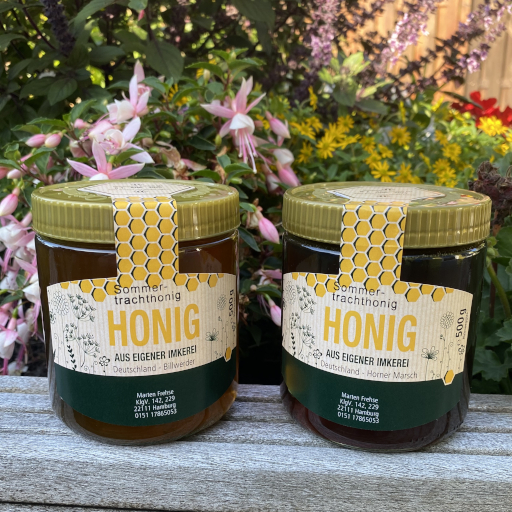

Sommerhonig aus 2023
Meinen Honig verkaufe ich noch nicht online, aber ihr könnt ihn bei mir direkt im Kleingartenverein 142 an der Parzelle 229 kaufen.

Der Sommerhonig aus 2023 ist noch zu haben.
Der Sommerhonig von den Bienen bei mir im Kleingartenverein ist durch die diesjährige Blattlauspopulation recht dunkel geworden.
Wer also einen sehr kräftigen Honig, der in die Richtung Waldhonig geht, haben möchte greift zu dem Honig aus der Horner Marsch.
Der Sommerhonig von meinen Bienen in Billwerder ist ein starker Blütenhonig geworden. Ein Absolutes Muss für jeden Blütenhonig Fan.
Jeder meiner Honige ist natürlich unbehandelt aber auch nicht lange gerüht. Hier kann es nach einiger Zeit zu einer Kristalisation kommen. Das bedeutet nicht das der Honig nicht mehr gut ist, ganz im Gegenteil.
Es bedeutet das der Honig reif, unbehandelt und von einer guten Qualität ist.
Wem die Kristalisation zu stark geworden ist kann das Honigglas im Wasserbad leicht erwährmen (auf keinen Fall über einen längeren Zeitraum und auch nicht über 36-40C°) und den Honig im Anschluss rühren.